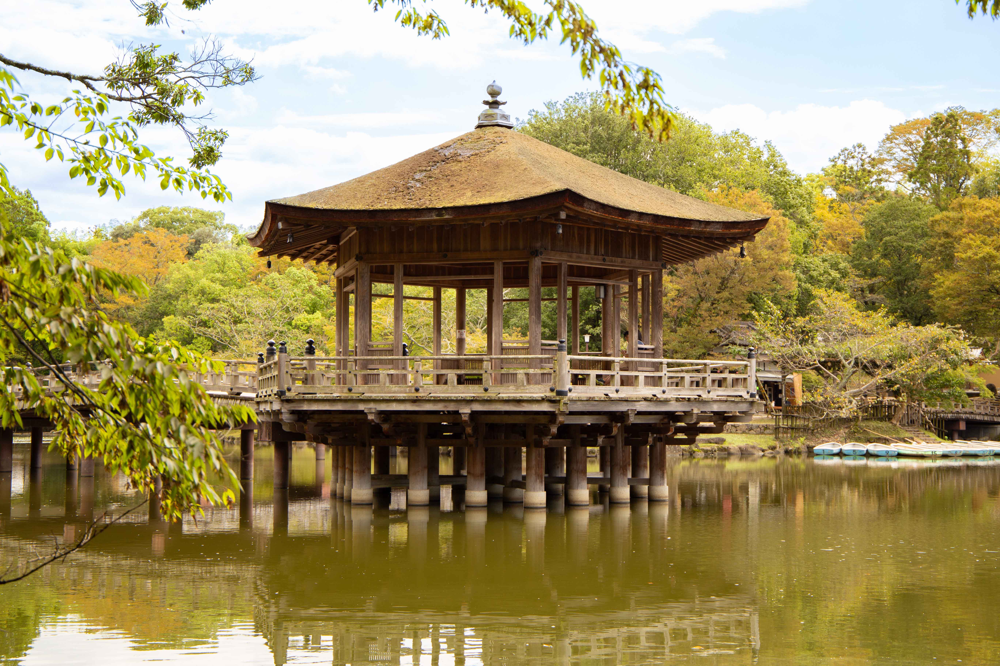
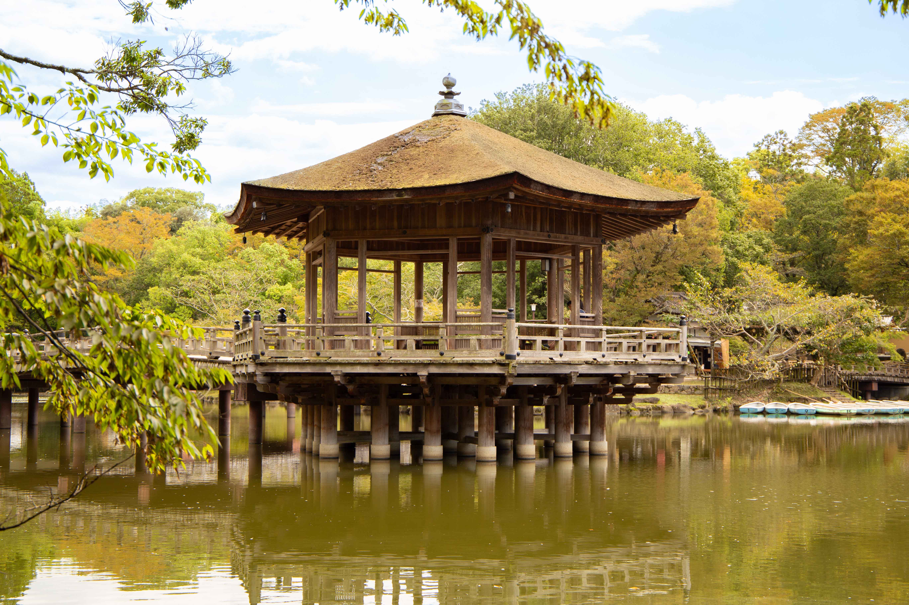

502 hectares
While the official size of the park is about 502 hectares (1,240 acres), the area including the grounds of Tōdai-ji, Kōfuku-ji, Kasuga Grand Shrine and Nara National Museum, which are either on the edge or surrounded by Nara Park, is as large as 660 hectares (1,600 acres).